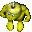

| 3 - Hit And Runnerz  |
||
|---|---|---|
| Edit Objects Dialog Box | ||
| Logic: | GruntStartingPoint | |
| Image Set: | GAME_WAPWORLDONLY_TRIGGER some Designerz use GAME_WAPWORLDONLY_GUARDPOINT | |
| Points: | 0 see Enemy AI Types for Points: value; Smarts: must contain a value other than 0. 3 identifies this enemy Grunt as type "Hit and Runner" |
|
| Smarts: | 0 ... default ... the player controlz this Grunt. 1 enemy team number. 2 enemy team number. 3 enemy team number. Note: Gruntz will attack any other Grunt with a different team number! |
|
| Powerup: | 0 bare-handed Grunt; see Toolz, Toyz, Cursez and Powerupz for other values. | |
| Direction: | 0 (default, solver's Grunt and Post Guardz ... not used) For any other enemy Grunt, this is the number of Tilez away he will sense any other team's Grunt. |
|
| Object Rectangles Dialog Box | ||
| Move Rect: | Defines Grunt movement limitz in four cardinal directionz | |
| Left | 0 This field specifies the number of Tiles to the left of the original position that the Grunt will wander randomly. (Definitely does apply to this enemy AI type.) | |
| Top | 0 This field specifies the number of Tiles above the original position that the Grunt will wander randomly. (Definitely does apply to this enemy AI type.) | |
| Right | 0 This field specifies the number of Tiles to the right of the original position that the Grunt will wander randomly. (Definitely does apply to this enemy AI type.) | |
| Bottom | 0 This field specifies the number of Tiles below the original position that the Grunt will wander randomly. (Definitely does apply to this enemy AI type.) | |
| Hit and Runnerz will hang around a location until they sense one of your Gruntz nearby. Once a Hit and Runner sensez one of your Gruntz, the Hit and Runner will attack him. Each time a Hit and Runner attackz, he will try to run away to a safe location until he can attack again. If your Grunt runz away, the Hit and Runner will chase after him. The only wayz to get a Hit and Runner to stop chasing you are: kill him, cross over an Arrow (enemy Gruntz will not step on an Arrow), or get far enough away from him that he can no longer sense you. Hit and Runnerz can be found carrying any of the Toolz in the game. Unlike the specialized enemy Gruntz (Brick Layer, Gauntletz, Goo Sucker, Digger, TimeBomber, Magic Wand and Scroller) Hit and Runnerz will not use their Toolz for anything other than fighting. The range that a Hit and Runner can sense can vary. |
||